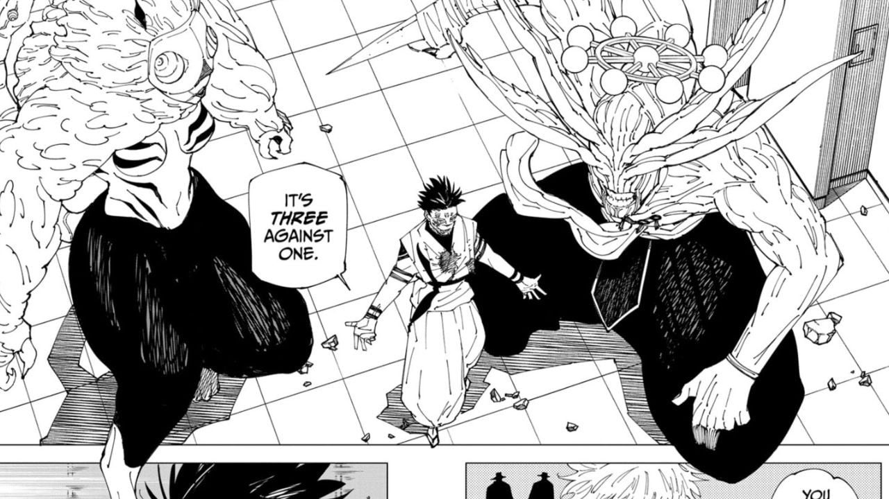

Jujutsu Kaisen (呪じゅ術じゅつ廻かい戦せん? lit. "Batalha de Feiticeiros") é um mangá japonês escrito e ilustrado por Gege Akutami, serializado na Weekly Shōnen Jump desde 5 de março de 2018. Os capítulos individuais são compilados em volume tankōbon, e publicados pela Shueisha desde julho de 2018. A série é licenciada e publicada no Brasil pela editora Panini.
Veja mais em: "https://pt.wikipedia.org/wiki/Jujutsu_Kaisen".
O capítulo mostra o decorrer da batalha entre os mais fortes feiticeiros do mundo todo: Ryomen Sukuna e Satoru Gojo. As coisas começam a esquentar quando é mostrado que Satoru está muito debilitado devido suas batalhas de domínio contra Sukuna, o que piora após Sukuna invocar a Quimera: Agito, criando uma luta de 3 contra 1. O que acontecerá a seguir?
